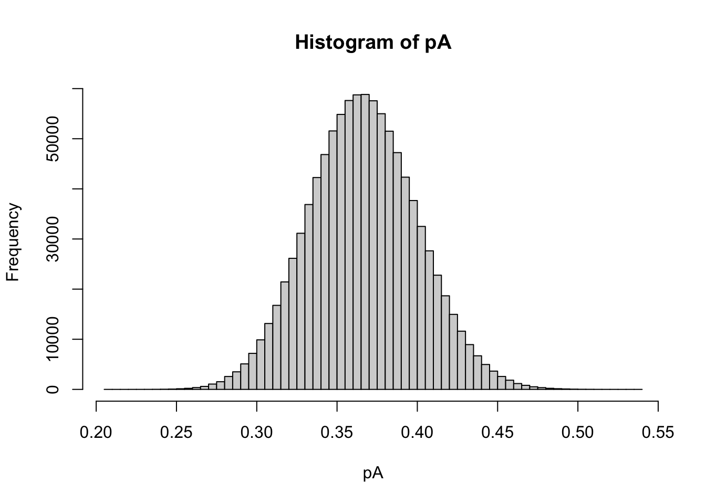

library(tidyverse)1 Probability, inference, and genotype likelihoods
1.1 Preamble
In this session, we will spend a little time talking about genotype likelihoods and “probabilistic genotype calling.”
But, I want to talk about these topics in the context of a little background on Bayesian statistics and Markov chain Monte Carlo.
So, my plan for this session is to start with a simple exercise of estimating an allele frequency in a Bayesian manner.
First, we’ll talk about estimating the allele frequencies alone:
- Introduce acyclic directed graphs (DAGs)
- Talk about proportionality to the joint probability (a nice perspective)
- Show what inference of allele frequencies looks like if you know the genotypes exactly. (We have a Shiny App for that!)
- Talk about how we could learn about the posterior by simulating values from it. Whether they were correlated (MCMC) or not (vanilla Monte Carlo).
After that we will put another layer into the model:
- Add in the idea that genotypes are not observed directly, but rather underlie counts of reads of different alleles.
- Show that computing the posterior distribution in this case is much more complicated.
- Provide an intuitive explanation of how MCMC works in this case
- Talk a little bit about what MCMC is
- Let everyone explore genotype likelihoods and posteriors from simulated sequencing read data in another Shiny App.
Finally, we have one last Shiny App to play with that I hope will help people to understand what is meant by the phrase, “propagate uncertainty about genotypes into downstream inferences.”
1.2 Bayesian Inference
1.2.1 Personal Probability
To understand the Bayesian paradigm, it is useful to start with the awareness that everyone has their own probabilities for events or outcomes, and these probabilities are informed by each person’s experience, their prior beliefs, the data that they have access to, and the inferential perspectives or models that they can bring to the task of understanding and incorporating the information that they have available.
Wait! What kind of crazy notion of probability is this? Many of us might be familiar with the idea of probability being interpretable as the long-run average frequency of outcomes if a particular event is repeated many times. But this “personal probability” paradigm sounds quite different…
A good way to approach this is with some simple card play. If I hand out cards from a shuffled deck to five people in the room and tell them not to look at the cards, and then ask everyone what the probability is that the next card on the deck is the ace of spades, most everyone will have the same probability for that. But if we let the 5 people look at their cards and then ask each, in turn, what they now think is the probability that the top card is the ace of spades, they will likely update their beliefs based on the card that they possess, as well as the responses of any cardholders before them.
There a lot of assumptions that go into these calculations. What are they?
At any rate, it is easy to see that people have different probabilities for the top card being an ace of spades depending on how much information they have.
1.2.2 Probability as a “Measuring Stick” for Uncertainty
A big switch being made here is that we are now using probability as a way of expressing or measuring each person’s “uncertainty” about an event. This is quite a departure from thinking about probability only as a property that can be discussed in connection with events that we can envision happening multiple time (so that we might derive a notion of probability as the average frequency of occurrence over very many trials.)
This interpretation of probability is considerably more flexible than the “frequentist” interpretation, and it is also already familiar to most of us: we are already quite comfortable with being told that the probability it is going to rain today is 30%, even though there will only ever be one today. With probability as a measure of uncertainty, you can use probabilities to talk about things that will only happen once. What is the probability that:
- There will be three more category 5 hurricanes this season?
- Next year will be the hottest on record?
Not only that, but now we can use probability to make statements about how uncertain we are about things that are deterministic. For example:
- What is your probability that Monrovia is the capital of Liberia?
So, if we are trying to measure:
- height, then we use centimeters,
- mass, then we use kilograms,
- electrical resistance, we use Ohms
- uncertainty?…we use probability…
1.2.3 An interesting digression
Probability as a field of mathematical study did not necessarily “grow up” with the intent to be a way to measure uncertainty. (It partly grew out of contemplation of “Borel subsets” and many much more esoteric concepts.) But the way that it was developed as a mathematical construct turns out to be precisely what is required if we desired to extend the system of logic in which 1 means “absolutely true” and 0 means “absolutely false” to a logical system in which there could be degrees of uncertainly between 0 and 1.
1.2.4 Updating Beliefs
A characteristic feature that we saw playing our card game is that when new information arrives, people update their beliefs, and hence they update their degree of undertainty (their probabilites…).
Clearly, if we want to be Bayesians and use probability to express uncertainty about things, we need a coherent, reasonable way to update our beliefs. This is done using basic principles from probability, which were described (for inferential purposes) by the Reverend Thomas Bayes (born 1702), and is hence known as Bayes’ Law, or Bayes Theorem.
Bayes Theorem is typically expressed in an equation that probably feels pretty opaque to most people (it certainly did to me when I was a young biology graduate student.) I remembered seeing it something like this: suppose that you have observed some data \(D\), and that you have \(k\) different hypotheses for its occurrence, and for each hypothesis, \(i\), you can compute \(P(D|H_i)\) the probability of observing D given that hypothesis \(i\) is true.
The posterior probability of a certain hypothesis \(H_i\) given \(D\) is then:
\[ P(H_i|D) = \frac{P(D|H_i)P(H_i)}{\sum_{j = 1}^k P(D|H_j)P(H_j)} \]
Yack! Let’s see if we can find an easier way to talk about this!
We will (at least I hope it will be easier) and we will do so while talking about a simple problem that we can build upon to make more complex models: estimating the frequency of an allele in a population.
1.2.5 A Simple Conditional Probability and DAGs
Almost all of the probabilities that we talk about routinely are conditional probabilities. That is, they are probabilities that are expressed conditional on some other variable or thing taking a certain value.
Here we will start beating to death an example that involves genotype and allele frequencies, but bear with us, because we will end up using what we learn from this example—and building upon it—throughout this lecture.
If we ask about the probability that an individual is homozygous for the \(A\) allele, we might first have to make an assumption that the population is in Hardy-Weinberg equilibrium, and then we also need to assess this probability conditional on the frequency of the \(A\) allele being \(p_A\) in the population.
So, we could write:
\[ P(\mbox{Individual is AA}~|~p_A) = p_A^2 \]
If we knew the value of \(p_A\), then it would be easy to do this calculation. This is an example of probability “running forward”. We will see later that when we want to do inference we need to “run probability backward” (which is what Bayes’ Theorem lets us do.)
Recall that HWE means that the allelic type of the two gene copies carried in an individual are conditionally independent given the allele frequency. Hence, the probability of drawing the first gene copy as an A is \(p_A\), and the probability that the second gene copy is drawn as an A (given that the first was an \(A\)), is also \(p_A\). So the probability that the individual is \(AA\) is the product of those: \(p_A^2\).
We can draw a diagram of that called an acyclic directed graph (or DAG). These are very helpful for visualizing models as they become more complex.

The key thing to know about DAGs is that they express the factorization of the joint probability of the variables into a product of conditional probabilities. (Specifically a product over nodes of the probability of each node conditional on its parents.)
From the way the DAG is drawn above, it is clear that we can say:
\[ P(\mbox{Individual is AA}~|~p_A) = P(Y_1 = A~|~p_A) P(Y_2 = A~|~p_A) = p_A \cdot p_A = p_A^2 \]
Here is a quick summary of DAGs:

1.2.6 A Picture of Inference of Allele Frequencies From a Sample of Genotypes
The previous discussion assumed that the allele frequency was known, and we wanted to compute the probability of an individual’s (unknown) genotype. For that exercise, we were running from an observed node in the graph (\(p_A\)) to two unobserved ones. This is a straightforward calculation of probabilities.
Much of the time in science, we are able to observe the variables at the end of the arrows in a DAG, and we want to make inferences about the variables that are “upstream” of them in a DAG. For an example, let us consider the situation in which we sample \(N\) diploids and observe their genotypes, and from that we want to infer the allele frequency \(p_A\).
The DAG for this situation looks like this:

From which it is immediately apparent that the probability of all the data, say \(\boldsymbol{Y} = (Y_{1,1}, Y_{1,2}, Y_{2,1}, \ldots, Y_{N,1}, Y_{N,2})\) is just a simple product of Bernoulli random variables:
\[ P(\boldsymbol{Y}~|~p_A) = \prod_{i=1}^N P(Y_{i,1}~|~p_A)P(Y_{i,2}~|~p_A) \]
In fact, if we define each \(Y\) to be 0 or 1 as follows:
\[ \begin{align} Y = 0 & ~~~~~\mbox{with probability} ~~~ 1 - p_A & ~~\mbox{(i.e., it's an}~a) \\ Y = 1 & ~~~~~\mbox{with probability} ~~~ p_A & ~~\mbox{(i.e., it's an}~A) \end{align} \]
Then it is not too hard to see that
\[ P(\boldsymbol{Y}~|~p_A) = p_A^{\sum Y_{i,j}} (1- p_A)^{2N - \sum Y_{i,j}} \]
This is a probability function. But if you consider this as a function of \(p_A\) with \(\boldsymbol{Y}\) considered as fixed, then it is often referred to as the likelihood function.
1.2.7 Methods of Inference
We see that we are trying to learn something (make inference) about \(p_A\) (an unshaded/unobserved variable) that is upstream of our observed data. This is inference.
To put some concrete numbers on this. Let’s say that \(N = 100\) diploids, and out of the 200 gene copies, 73 of them were \(A\) alleles.
There are lots of ways that you might do inference. Here are a few:
- Method of the Eyeball: Look at your sample and surmise that the fraction of A alleles in the sample is a good estimate of the fraction of \(A\) alleles in the population.
- Method of Moments: This formalizes the “Method of the Eyeball” by equating the sample mean with the population mean.
- Method of Maximum Likelihood: Find the value of \(p_A\) that maximizes the probability of observing your sample. In other words, consider the probability \(P(\boldsymbol{Y}~|~p_A)\) as a function of \(p_A\), where the data, \(\boldsymbol{Y}\), are fixed, and then find the value of \(p_A\) that maximises that likelihood function.
All of those methods give you a point estimate for \(p_A\). An alternative to these methods is to be Bayesian and find the posterior distribution for \(p_A\) conditional on the data, \(\boldsymbol{Y}\).
Before we do this, we are going to want to review a view simple facts about marginal, conditional, and joint probabilities.
1.2.8 Some important probability rules
If you have two different events \(A\) (no relation, necessarily, to the big-A allele ) and \(B\), and we use \(A\) and \(B\) to refer to the outcome of each, then here are some things that are always true:
- \(P(A)\) and \(P(B)\) are referred to as marginal probabilities.
- The joint probability of \(A\) and \(B\) is the probability that those two outcomes occurred, and it can be computed as the product of a marginal probability and a conditional probability, in two different ways:
\[ P(A,B) = P(A)P(B~|~A) = P(B)P(A~|~B) \]
- This means that conditional probabilities can be computed from the joint probability:
\[ P(A~|~B) = \frac{P(A,B)}{P(B)}~~~~~~~~~~~~~~~~~~~~~~~~ P(B~|~A) = \frac{P(A,B)}{P(A)} \]
And that leads us to an expression for Bayes Theorem that I find easier to grok out:
\[ P(A~|~B) \propto P(A, B) \]
where we are thinking of \(P(A|B)\) as a function of \(A\) with \(B\) fixed. It is typically easy to compute the joint probability, \(P(A,B)\), and then you just have to remember that \(P(A~|~B)\), since it is a probability on \(A\), must sum to one over all possible values of \(A\).
The same is true for:
\[ P(B~|~A) \propto P(A, B) \]
1.2.9 Bayesian Inference for \(p_A\)
Back to our simple example. If we want to do Bayesian inference for \(p_A\) we see that we will want to compute the posterior probability:
\[ P(p_A|\boldsymbol{Y}) \]
which we now know is going to be proportional to the joint probability:
\[ P(p_A,\boldsymbol{Y}) \]
and what we currently have at our disposal is the likelihood:
\[ P(\boldsymbol{Y}~|~p_A) \]
We could get the joint probability by using the likelihood in the product:
\[ P(p_A,\boldsymbol{Y}) = P(\boldsymbol{Y}~|~p_A) P(p_A) \]
But what is this \(P(p_A)\)?!
It is the prior distribution for \(p_A\). It is a necessary ingredient to be able to use the likelihood to compute the joint probability (and, hence, the posterior probability), and we envision it as a probability distribution that expresses our degree of belief about \(p_A\) before we look at the data.
Note that this all boils down verbally to: The posterior distribution is proportional to the prior times the likelihood.
1.2.10 A family of priors for \(p_A\)
Since \(p_A\) is a proportion, an obvious choice for prior would be a beta distribution. The beta distribution gives a continuous prior distribution on a value that is between 0 and 1. It has two parameters, often called \(\alpha_1\) and \(\alpha_2\). Here are some examples:

The beta density for a random variable \(X\) has the form:
\[ p(x | \alpha_1, \alpha_2) = \frac{\Gamma(\alpha_1 + \alpha_2)}{\Gamma(\alpha_1)\Gamma(\alpha_2)} x^{\alpha_1 - 1}(1-x)^{\alpha_2 - 1} \]
The part that looks hairy is a few Gamma functions. Don’t worry about those—it is a constant. The important part (the “kernel”, as they say…) is:
\[ x^{\alpha_1 - 1}(1-x)^{\alpha_2 - 1} \]
Or, if we wanted this to a be a prior on \(p_A\), the prior would be proportional to:
\[ {p_A}^{\alpha_1 - 1}(1-p_A)^{\alpha_2 - 1} \]
And, if we wanted to be even more specific, we could choose \(\alpha_1 = \alpha_2 = 1\) to give ourselves a uniform prior which is proportional to 1:
\[ P(p_A) \propto {p_A}^{1 - 1}(1-p_A)^{1 - 1} = {p_A}^{0}(1-p_A)^{0} = 1 \]
1.2.11 A Graphical Aside
Just wanting to point out that if you want to be a Bayesian, you can’t have any unobserved nodes on your DAG that don’t have any parents. Those priors that you use/accept/assume are always the uppermost nodes in a DAG. I usually use gray nodes to denote them. For example, here is the DAG for the Bayesian version of the previously shown DAG:

1.2.12 The posterior for \(p_A\)
Now that we have a choice for our prior, \(P(p_A)\), we can easily find something that is proportional to the posterior distribution. What is proportional to the posterior distribution? Remember, The posterior distribution is proportional to the prior times the likelihood (which, don’t forget, is the joint probability). Remember that the likelihood looks like:
\[ P(\boldsymbol{Y}~|~p_A) = p_A^{\sum Y_{i,j}} (1- p_A)^{2N - \sum Y_{i,j}} \]
And, in our example, the number of \(A\) alleles is 73 (out of 200), so \(\sum Y_{i,j} = 73\) and \(2N - \sum Y_{i,j} = 127\).
Since we are only going to worry about finding something that the posterior probability is proportional to, we can drop any constants and we get this for the prior times the likelihood:
\[ \begin{align} P(p_A~|~\boldsymbol{Y}) &\propto {p_A}^{0}(1-p_A)^{0} \times p_A^{73}(1-p_A)^{127} \\ & \propto p_A^{73}(1-p_A)^{127} \\ & \propto p_A^{74 - 1}(1-p_A)^{128 - 1} \\ \end{align} \]
which is precisely the kernel of a beta distribution with parameters 74 and 128.
Aha! So, the posterior here is a beta distribution with \(\alpha_1 = 74\) and \(\alpha_2 = 128\). We can plot that if we want:

1.2.13 Shiny Interlude #1
In fact, we can do one better than just plotting that. I’ve prepared a Shiny Notebook that lets you play with different values of the allele frequency (\(p_T\) in this case—the frequency of the \(T\) base at a genome position), simulate diploid genotype data from that, and then compute the posterior distribution, whilst fiddling with the prior parameters, if desired.
The one downside of Shiny apps is that they don’t run properly on the RStudio Server that has been set up for ConGen. Nor will they run properly in the Remote Desktop version of the same.
But this is not a huge issue, since you should be able to run it on your own computer with RStudio. The procedure for that is
- Open up RStudio.
- In the R console paste this code:
if(!("usethis" %in% rownames(installed.packages()))) {
install.packages("usethis")
}
usethis::use_course("eriqande/ngs-genotype-models")- You will need to answer the “Yes” response to a few questions. This will download an RStudio project and open it.
- From this RStudio project’s file browswer, open the file
001-allele-freq-estimation.Rmd. - If the message at the top of the file says you need some new packages, click the install option.
- Then Click the “Run Document” button.
If that does not work for some of the students: you can go directly to the website: https://eriqande.shinyapps.io/001-allele-freq-estimation/. But, be warned that if too many people use that link it will overwhelm my free ShinyApps account.
Now, I am going to break students into break-out groups of 4 or 5 (randomly) for about 15 minutes.
Take a few minutes to introduce yourselves to one another, then play with the Shiny app and talk to one another about it as you do. Maybe even work togethery to do these things:
- Input beta distribution parameters to get these different shapes:
- an upward facing U
- a flat line
- a curve that keeps going up at one of the boundaries
- a hill with a peak at 0.3
- Observe how the posterior distribution changes when sample size changes.
- With a true allele frequency of \(p_T = 0\), with a sample size of 50 diploids, find values of the prior parameters that will give you a posterior centered on 0.5 (in other words a ridiculously heavy prior…)
I’ll try to say hello in the different break out rooms.
1.2.14 To the Bayesian, the posterior distribution is everything
To the Bayesian, the posterior distribution contains all the information that the data has about the parameter to be estimated—in this case, \(p_A\). And, the full posterior distribution, unsummarized, expresses that all that information as fully as can be done.
However, sometimes you don’t want to carry around a full posterior distribution, especially if it is a distribution on multiple variables (multidimensional).
Often you will want to summarise the posterior distribution.
1.2.15 Some standard ways of summarizing the posterior
- The posterior mean. Gives a point estimate that minimizes squared error posterior loss.
- The posterior median. Gives a point estimate that minimizes absolute posterior loss.
- The posterior mode. Gives a point estimate that minimizes 0-1 posterior loss.
- The Bayesian Credible Interval: provides an interval estimator. Like a confidence interval, but infinitely easier to interpret correctly…
1.3 Monte Carlo sampling from a posterior distribution
In the above segment, we obtained a posterior distribution analytically. That is not the way things typically work out. It is more common that one is not able to obtain the posterior analytically, but, rather, can only obtain a sample from the posterior distribution. With a sample from the posterior, however, it is possible to use Monte Carlo to approximate virtually any quantity that might be of interest. Let’s look at that with our simple example.
1.3.1 A “vanilla” Monte Carlo sample from the posterior for \(p_A\)
Even though we can compute the posterior analytically, it can still be convenient to obtain a sample from it. We can sample 1 million values from the posterior for \(p_A\) like this:
pA <- rbeta(n = 10^6, 74, 128)The first 10 values of that sample look like:
pA[1:10] [1] 0.4010031 0.3504334 0.2876781 0.3459483 0.3005550 0.3469723 0.4103598
[8] 0.3340840 0.3624354 0.4180388We call this a “vanilla” Monte Carlo sample because every member of the sample was independent—this is not Markov chain Monte Carlo.
If we wanted to use the sample to approximate the full posterior, we could do that with a histogram:
hist(pA, breaks = 100)
If we want the posterior mean, that is easy, too:
mean(pA)[1] 0.366283as is the posterior median:
median(pA)[1] 0.3658741Or the standard deviation of the posterior distribution:
sd(pA)[1] 0.03379655Or, the 90%-equal-tail Credible Interval
quantile(pA, probs = c(0.05, 0.95)) 5% 95%
0.3114234 0.4225508 All of those quantities could have been obtained analytically in this case, but it is a lot simpler to just work with a Monte Carlo sample because the operations are the same with every Monte Carlo sample (which is not necessarily true of every analytical distribution…).
1.3.2 Transformations are simple with a Monte Carlo sample
Imagine for a moment that what you really wanted to estimate was the probability that, if you sampled three individuals, in sequence, from the population, the first one would be homozygous \(AA\), the second one would be heterozygous \(Aa\) and the third one would be homozygous \(aa\). Since we are being Bayesians here, we will want to compute the posterior distribution of that probability given the observed data. This is something that would be quite messy to do analytically, but it is easy to use the Monte Carlo sample to do it. Clearly, for a given \(p_A\), the probability of the sequence (\(AA\), \(Aa\), \(aa\)) is \(p_A^2\times 2 p_A (1-p_A) \times (1-p)^2\). So, the posterior distribution of that quantity is simply:
three_geno_seq_posterior <- pA^2 * 2 * pA * (1 - pA) * (1 - pA)^2And we can look at it:
hist(three_geno_seq_posterior, breaks = 100)
1.4 Probabilistic Genotype Calling / Allele frequency estimation
We are now going to expand our allele frequency model just a little bit, to get a taste for how we might infer both allele frequencies and genotypes given short read data.
Let’s consider this setup: we are trying to infer genotypes in individuals and estimate the allele frequencies in a population at a SNP in which the variants are the two different bases, \(C\) or \(T\). We know where the SNP occurs (we are disregarding the problem of inferring whether a SNP is there) but we do not know its frequency in the population. We have sequenced \(N\) individuals at this SNP. We don’t know the genotype of any of these individuals, but we get to observe the number of sequencing reads on each individual, \(i\), that contain a \(C\), and the number of reads that contain a \(T\) at the site. We call that observed variable \(\boldsymbol{R}_i = (R_{i,C}, R_{i,T})\), a two-vector. We include in our model a sequencing error rate \(\mu\) which, for simplicity here, we will assume is known. With probability \(\mu\) a read from a chromosome that really contains a \(C\) at the site will report a \(T\), while with probability \(1 - \mu\) the base at the site is correctly reported as a \(C\). Similarly for chromosomes that contain a \(T\) at the site, with probability \(\mu\) a read will report a \(C\) and with probability \(1 - \mu\) it will correctly report a \(T\).
Here is a DAG for the model:

All right. This is fun. Now there are two layers of unknown variables (the \(Y\)’s and \(p_C\) that we will try to infer together, at the same time).
1.4.1 Why is this a good idea?
Because the allele frequency estimate is there to inform the inference of genotypes.
If the frequency of the \(C\) allele is quite low, that will provide a lot of evidence in the model against inferring someone to be homozygous for the \(C\) allele.
And this would be a good thing, because after a little bit of looking at published data sets of genotypes called by traditional means (i.e. apparently without considering allele frequencies), it appears there is a bit of an epidemic of genotyping error in RAD sequenced data.
1.4.2 Conditional probabilities in the model
Most of these we have seen before:
- \(P(p_C | \alpha_C, \alpha_T)\) is just a beta prior on \(p_C\).
- \(Y_{i,1}\) is a Bernoulli trial with success probability (i.e. probability of getting a \(C\) of \(p_C\).)
- The only new one is the probability distribution of read counts given the genotype and the genotyping error rate: \(P(\boldsymbol{R}_i~|~Y_{i,1}, Y_{i,2}, \mu)\)
1.4.3 The conditional probability \(P(\boldsymbol{R}_i~|~Y_{i,1}, Y_{i,2}, \mu)\)
This thing turns out to be pretty easy. It can be broken down into cases:
- \(i\) is homozygous for \(C\) (i.e., \(Y_{i,1} = Y_{i,2} = C\)): In this case, the only way to get a read with a \(T\) at the site is by a sequencing error, which happens with probability \(\mu\). Thus, it is akin to drawing \(M = R_{i,C} + R_{i,T}\) balls out of an urn (with replacement), a fraction \(\mu\) of which say \(T\) on them, the rest which say \(C\) on them. In such a case \(R_{i,C}\) is binomially distributed, \(M\) draws with success probability \(1-\mu\).
- \(i\) is homozygous for \(T\) (i.e., \(Y_{i,1} = Y_{i,2} = T\)): Same argument as above, \(R_{i,C}\) is binomially distributed, \(M\) draws with success probability \(\mu\) this time, rather than \(\mu\).
- \(i\) is heterozygous (i.e., \((Y_{i,1} = C, Y_{i,2} = T)\) or \((Y_{i,1} = T, Y_{i,2} = C)\)): Because we have assumed sequencing error rates are symmetrical between different bases, this is easily figured out—the reads are like balls you are sampling (with replacement) from an Urn in which half of the balls are \(T\)’s and half of them are \(C\)’s.
Note that when this probability is considered a function of the genotype, (with the observed reads treated as fixed), it is know as the genotype likelihood:
\[ L(Y_{i,1}, Y_{i,2}; \boldsymbol{R}_i, \mu) = P(\boldsymbol{R}_i~|~Y_{i,1}, Y_{i,2}, \mu) \]
An easier way to see this might be a picture:

Genotype likelihoods are measures of how much support the read data gives to the three possible genotypes (\(CC\), \(CT\), or \(TT\), in this case).
They are a critical ingredient for using read information for doing population genomics, but they are only part of the story.
1.4.4 Some of the assumptions in the above model…
There are quite a few but the biggest is that each read is independent of the others. That assumption would be violated if:
- the sequences upon which the \(C\) (or the \(T\)) occurred were somehow subject to greater amplification during any PCR steps, or were more likely to attach to “the lawn” on an Illumina machine.
- there are PCR duplicates. This can be a really big issue for RAD methods that don’t have a good mechanism for filtering PCR duplicates.
1.4.5 An intuitive picture of how Monte Carlo might proceed
The unobserved genotypes of the individuals in the above model are what are sometimes called “missing data”. They are not missing data in the sense of small holes in your data set that resulted from some data-collection failure. They are missing in the sense of “What is missing here is something that would make this whole problem easier”. Clearly, as we showed in an earlier section, if we knew these genotypes exactly, doing Bayesian inference for \(p_C\) is pretty darn easy.
Another name for this “missing data” is “latent variables.” Many formulations of MCMC are developed with these types of latent variables. In our case, a brief sketch of how MCMC would proceed starts with a bit of wishful thinking. We say, “Wouldn’t it be great if we actually knew the value of \(p_C\)…Hey! We don’t, but let’s just start with a guess and pretend it is true.” So, we would start by initializing the model and setting \(p_C\) to some random value, let us call that value \(p_C^{(0)}\).
Now, if we know the value of \(p_C\), then the only thing that would be left unknown in the model would be the genotypes of the individuals. But looking at the graph it is clear that they are all conditionally indendent given \(p_C^{(0)}\) and the observed read depths. So, pretending that \(p_C^{(0)}\) is the truth, we could compute, for each individual \(i\), the posterior probabilities of \(i\)’s genotype (the three cases, 1–3 above). (By the way, this distribution is often called the “full conditional distribution”).
Then we would simulate values of the genotypes from those posterior distributions. Aha! once we have those simulated, we can pretend that they are real and use them to come up with a new estimate of \(p_C\) by computing the posterior distribution (full conditional) for \(p_C\) given the current values of the genotypes and then simulating a value from that distribution. Call that \(p_C^{(1)}\), and then go back to simulating new values for the genotypes.
Doing that over and over again creates a Markov chain that does a random walk over the space of all possible genotypes of the \(i\) individuals and the unknown allele frequency \(p_C\), with the amount of time the chain spends in any state being proportional to the posterior probability of that state!.
This is actually Markov chain Monte Carlo.
1.4.6 What is the Markov Chain part of MCMC?
We’ve seen that Monte Carlo in this Bayesian context is all about basing one’s inference on a sample from the posterior distribution. However, it turns out that you often can’t obtain independent samples from a complex posterior distribution. In high dimensions that is just not possible. But, it is possible to construct an ergodic Markov chain that has as its limiting distribution the posterior distribution you want to be sampling from. In fact, that is what our “wishful thinking” procedure with the “missing data”, described above, is actually doing.
What?!
OK, we will talk briefly about Markov chains. Basically a Markov chain is a stochastic process (like a random walk) in which the probability of ending up in some place after the next step depends only on where it currently is—not on how it got there…
A classic example is a random walk, we will consider one with scattering boundaries:

The important take-home message from the tpm Computer Demo is that if you run a Markov chain long enough, it spends time in different states with a predictable pattern called the limiting distribution. In other words, you can take a sample of the states visited by the chain and use that as a Monte Carlo sample. That is Markov chain Monte Carlo.
1.4.7 Why MCMC is so great for Bayesians
Via MCMC, it is possible to obtain samples from the posterior distribution even if the posterior distribution is highly-multidimensional and complicated.
There are two main reasons for this:
- A Markov chain can be devised to sample from the posterior distribution without knowing the normalizing constant. In other words, if you can compute the joint probability (prior times likelihood) for a fully-observed version of your model, that is all you need. (Note that you can pretty much always compute the joint probability for a fully-observed model.)
- The Markov chain so devised can be constructed by proposing changes only to small parts of the model, which makes it possible to break down complex distributions in ways that make it manageable to sample from them.
Sadly, the details of this are beyond the scope of a 40 minute lecture and a few hands-on sessions.
1.4.8 Why MCMC can be not-so-great
- It can be computationally expensive and take a long time.
- It can mix poorly, i.e. it might not sample reliably from all areas of the distribution in proportion to (or even approximately in proportion to) their posterior probability.
- It can appear to be mixing well, but actually not be mixing well. It is important to perform multiple runs from different starting values to assess convergence.
- Especially in “canned packages” it can let you do “black-boxy” inference in models that are so complicated that it is hard to have proper intuition about how they behave or perform given the vararies of your own data.
Again, these topics are beyond the scope of this presentation. But grab me at some point if you want to talk about it, or consider the MCMC course at the Summer Institute in Statistical Genetics.
1.4.9 Playing with genotype likelihoods and genotype posteriors
The genotype likelihoods can be calculated from the read data alone.
But, if we combine that with allele frequencies in our model:
…then we can also compute the posterior probability (by MCMC sampling) of each genotype. If you are sampling from a single population, then this can provide a better estimate of the true genotype.
1.4.10 Shiny Interlude #2
From the ngs-genotype-models RStudio project that you downloaded previously:
- Open
002-genotype-likelihoods-from-reads.Rmd - Install any packages that RStudio tells you that you might need. (i.e.
install.packages("cowplot")if need be…) - Hit the “Run Document” Button
(If this doesn’t work for you, then you can access the Shiny app over the web: https://eriqande.shinyapps.io/002-genotype-likelihoods-from-reads/ )
Then you can simulate genotypes, as before, but now, you can simulate reads from those genotypes, and then compute genotype posteriors using MCMC.
1.4.11 Back to breakout rooms…some questions:
- What are the likelihoods for the three different possible genotypes when the read depth is 0 for an individual?
- What does it take for the likelihood to be highest for the heterozygote hypothesis?
- Is it more likely that a true heterozygote genotype will have a posterior probability that is highest for the hyothesis of “common homozygote” or the hypotheses of “rare homozygote.”
- How does the posterior distribution of the allele frequency computed from read data (the transparent blue histogram) compare to the posterior distribution if you know the genotypes exactly (the black line)? How does this change when read depth is increased or decreased?
- If you only have a single read from a heterozygous individual, will that individual’s maximum likelihood genotype ever be “heterozygote.” What about its maximum a-posteriori genotype? What are the conditions that lead to the heterozygous individual with only a single read having a high posterior probability of being a heterozygote?
- When read depths are low, even if you are calling genotypes using the highest posterior probability, do you expect the results to be very accurate?
There are more questions for thought at the bottom of the Shiny App Notebook, too.
1.5 One final hands on exercise
You might hear someone say, “the great thing about using genotype likelihoods, instead of called genotypes, with low-depth sequencing, is that you can propagate the uncertainty downstream in your analysis.”
In fact, I have said that sort of thing many times before (and probably have said it several times today.)
But, what the hell does it really mean?
1.5.1 Shiny Interlude #3
Our third exercise with a ShinyApp addresses this question, revealing some of the unfortunate things that can happen if you call genotypes from low coverage sequencing data and you treat them as known/certain.
From the ngs-genotype-models RStudio project that you downloaded previously:
- Open
003-read-inference-gsi.Rmd - Install any packages that RStudio tells you that you might need. (i.e.
install.packages("cowplot")if need be…) - Hit the “Run Document” Button
(If this doesn’t work for you, then you can access the Shiny app over the web: https://eriqande.shinyapps.io/003-read-inference-gsi/ )
1.6 Wrap Up
Key Take Home Messages:
- To the Bayesian, probability is how we measure uncertainty.
- The posterior is proportional to the prior times the likelihood.
- Monte Carlo sampling from a posterior distribution makes it very easy to assess the posterior distribution of any function of the samples.
- MCMC is useful to Bayesians because it can simulate from the posterior without needing to compute the normalizing constant.
- MCMC is great, but should be used with care.
- In their essence, models for calling genotypes probabilistically while estimating and accounting for allele frequencies are quite simple, and make a lot of sense.
- There are a lot of RAD/GBS-derived data sets of genotypes that show evidence of profoundly high rates of heterozygotes being miscalled as homozygotes. It doesn’t seem out of the question that such error rates could influence downstream inferences.
- However, not all studies show very high genotyping error rates—high read depths and intelligent/stringent filtering can prevail.
- Probabilistic genotype calling is certainly a principled way to address these issues, but it is not a panacea. It still adheres to the principles of GIGO and can’t make something from nothing.
- Don’t fool yourself into thinking that by using probabilistic genotype calling you won’t lose anything when you shave sequencing effort down to as little as possible. It is possible to lose a fair bit when you go down to low read depth / coverage. But, it depends on what question you are trying to answer.